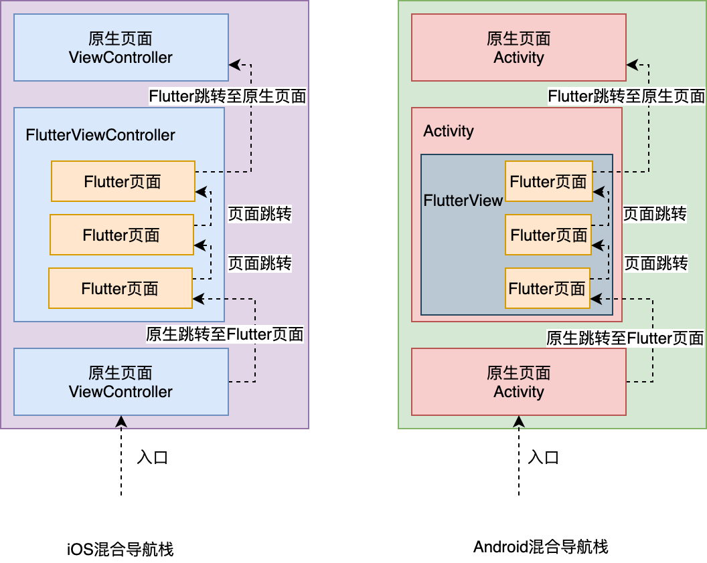
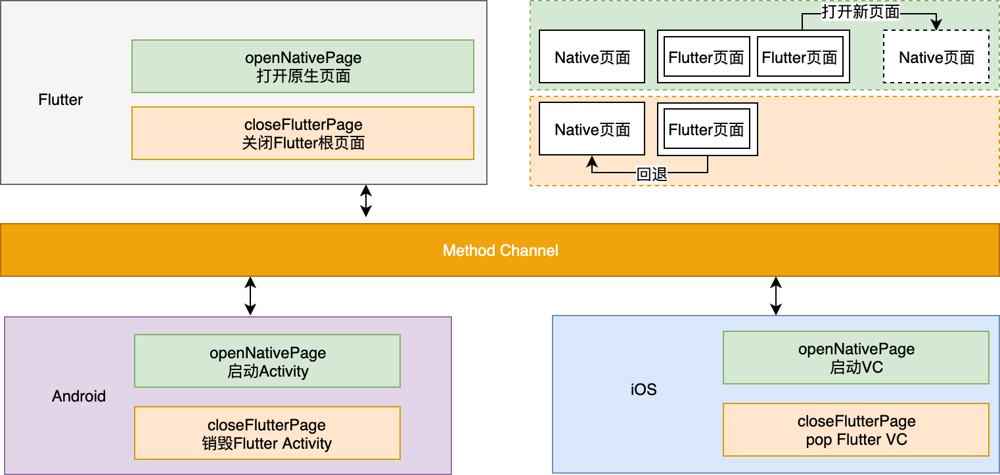
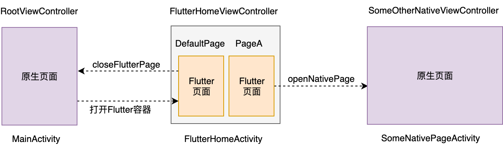

你好，我是陈航。
为了把 Flutter 引入到原生工程，我们需要把 Flutter 工程改造为原生工程的一个组件依赖，并以组件化的方式管理不同平台的 Flutter 构建产物，即 Android 平台使用 aar、iOS 平台使用 pod 进行依赖管理。这样，我们就可以在 Android 工程中通过 FlutterView，iOS 工程中通过 FlutterViewController，为 Flutter 搭建应用入口，实现 Flutter 与原生的混合开发方式。
我在第 26 篇文章中提到，FlutterView 与 FlutterViewController 是初始化 Flutter 的地方，也是应用的入口。可以看到，以混合开发方式接入 Flutter，与开发一个纯 Flutter 应用在运行机制上并无任何区别，只需要原生工程为它提供一个画板容器（Android 为 FlutterView，iOS 为 FlutterViewController），Flutter 就可以自己管理页面导航栈，从而实现多个复杂页面的渲染和切换。
关于纯 Flutter 应用的页面路由与导航，我已经在第 21 篇文章中与你介绍过了。今天这篇文章，我会为你讲述在混合开发中，应该如何管理混合导航栈。
对于混合开发的应用而言，通常我们只会将应用的部分模块修改成 Flutter 开发，其他模块继续保留原生开发，因此应用内除了 Flutter 的页面之外，还会有原生 Android、iOS 的页面。在这种情况下，Flutter 页面有可能会需要跳转到原生页面，而原生页面也可能会需要跳转到 Flutter 页面。这就涉及到了一个新的问题：如何统一管理原生页面和 Flutter 页面跳转交互的混合导航栈。
接下来，我们就从这个问题入手，开始今天的学习吧。
混合导航栈
混合导航栈，指的是原生页面和 Flutter 页面相互掺杂，存在于用户视角的页面导航栈视图中。
以下图为例，Flutter 与原生 Android、iOS 各自实现了一套互不相同的页面映射机制，即原生采用单容器单页面（一个 ViewController/Activity 对应一个原生页面）、Flutter 采用单容器多页面（一个 ViewController/Activity 对应多个 Flutter 页面）的机制。Flutter 在原生的导航栈之上又自建了一套 Flutter 导航栈，这使得 Flutter 页面与原生页面之间涉及页面切换时，我们需要处理跨引擎的页面切换。

接下来，我们就分别看看从原生页面跳转至 Flutter 页面，以及从 Flutter 页面跳转至原生页面，应该如何处理吧。
从原生页面跳转至 Flutter 页面
从原生页面跳转至 Flutter 页面，实现起来比较简单。
因为 Flutter 本身依托于原生提供的容器（iOS 为 FlutterViewController，Android 为 Activity 中的 FlutterView），所以我们通过初始化 Flutter 容器，为其设置初始路由页面之后，就可以以原生的方式跳转至 Flutter 页面了。
如下代码所示。对于 iOS，我们初始化一个 FlutterViewController 的实例，为其设置初始化页面路由后，将其加入原生的视图导航栈中完成跳转。
对于 Android 而言，则需要多加一步。因为 Flutter 页面的入口并不是原生视图导航栈的最小单位 Activity，而是一个 View（即 FlutterView），所以我们还需要把这个 View 包装到 Activity 的 contentView 中。在 Activity 内部设置页面初始化路由之后，在外部就可以采用打开一个普通的原生视图的方式，打开 Flutter 页面了。
//iOS 跳转至 Flutter 页面FlutterViewController *vc = [[FlutterViewController alloc] init];[vc setInitialRoute:@"defaultPage"];// 设置 Flutter 初始化路由页面[self.navigationController pushViewController:vc animated:YES];// 完成页面跳转 //Android 跳转至 Flutter 页面 // 创建一个作为 Flutter 页面容器的 Activitypublic class FlutterHomeActivity extends AppCompatActivity { protected void onCreate(Bundle savedInstanceState) { super.onCreate(savedInstanceState); // 设置 Flutter 初始化路由页面 View FlutterView = Flutter.createView(this, getLifecycle(), "defaultRoute"); // 传入路由标识符 setContentView(FlutterView);// 用 FlutterView 替代 Activity 的 ContentView }}// 用 FlutterPageActivity 完成页面跳转Intent intent = new Intent(MainActivity.this, FlutterHomeActivity.class);startActivity(intent);从 Flutter 页面跳转至原生页面
从 Flutter 页面跳转至原生页面，则会相对麻烦些，我们需要考虑以下两种场景：
- 从 Flutter 页面打开新的原生页面；
- 从 Flutter 页面回退到旧的原生页面。
首先，我们来看看 Flutter 如何打开原生页面。
Flutter 并没有提供对原生页面操作的方法，所以不可以直接调用。我们需要通过方法通道（你可以再回顾下第 26 篇文章的相关内容），在 Flutter 和原生两端各自初始化时，提供 Flutter 操作原生页面的方法，并注册方法通道，在原生端收到 Flutter 的方法调用时，打开新的原生页面。
接下来，我们再看看如何从 Flutter 页面回退到原生页面。
因为 Flutter 容器本身属于原生导航栈的一部分，所以当 Flutter 容器内的根页面（即初始化路由页面）需要返回时，我们需要关闭 Flutter 容器，从而实现 Flutter 根页面的关闭。同样，Flutter 并没有提供操作 Flutter 容器的方法，因此我们依然需要通过方法通道，在原生代码宿主为 Flutter 提供操作 Flutter 容器的方法，在页面返回时，关闭 Flutter 页面。
Flutter 跳转至原生页面的两种场景，如下图所示：

接下来，我们一起看看这两个需要通过方法通道实现的方法，即打开原生页面 openNativePage，与关闭 Flutter 页面 closeFlutterPage，在 Android 和 iOS 平台上分别如何实现。
注册方法通道最合适的地方，是 Flutter 应用的入口，即在 FlutterViewController（iOS 端）和 Activity 中的 FlutterView（Android 端）这两个容器内部初始化 Flutter 页面前。为了将 Flutter 相关的行为封装到容器内部，我们需要分别继承 FlutterViewController 和 Activity，在其 viewDidLoad 和 onCreate 初始化容器时，注册 openNativePage 和 closeFlutterPage 这两个方法。
iOS 端的实现代码如下所示：
@interface FlutterHomeViewController : FlutterViewController@end @implementation FlutterHomeViewController- (void)viewDidLoad { [super viewDidLoad]; // 声明方法通道 FlutterMethodChannel* channel = [FlutterMethodChannel methodChannelWithName:@"samples.chenhang/navigation" binaryMessenger:self]; // 注册方法回调 [channel setMethodCallHandler:^(FlutterMethodCall* call, FlutterResult result) { // 如果方法名为打开新页面 if([call.method isEqualToString:@"openNativePage"]) { // 初始化原生页面并打开 SomeOtherNativeViewController *vc = [[SomeOtherNativeViewController alloc] init]; [self.navigationController pushViewController:vc animated:YES]; result(@0); } // 如果方法名为关闭 Flutter 页面 else if([call.method isEqualToString:@"closeFlutterPage"]) { // 关闭自身 (FlutterHomeViewController) [self.navigationController popViewControllerAnimated:YES]; result(@0); } else { result(FlutterMethodNotImplemented);// 其他方法未实现 } }];}@endAndroid 端的实现代码如下所示：
// 继承 AppCompatActivity 来作为 Flutter 的容器public class FlutterHomeActivity extends AppCompatActivity { @Override protected void onCreate(Bundle savedInstanceState) { super.onCreate(savedInstanceState); // 初始化 Flutter 容器 FlutterView flutterView = Flutter.createView(this, getLifecycle(), "defaultPage"); // 传入路由标识符 // 注册方法通道 new MethodChannel(flutterView, "samples.chenhang/navigation").setMethodCallHandler( new MethodCallHandler() { @Override public void onMethodCall(MethodCall call, Result result) { // 如果方法名为打开新页面 if(call.method.equals("openNativePage")) { // 新建 Intent，打开原生页面 Intent intent = new Intent(FlutterHomeActivity.this, SomeNativePageActivity.class); startActivity(intent); result.success(0); } // 如果方法名为关闭 Flutter 页面 else if(call.method.equals("closeFlutterPage")) { // 销毁自身 (Flutter 容器) finish(); result.success(0); } else { // 方法未实现 result.notImplemented(); } } }); // 将 flutterView 替换成 Activity 的 contentView setContentView(flutterView); }}经过上面的方法注册，我们就可以在 Flutter 层分别通过 openNativePage 和 closeFlutterPage 方法，来实现 Flutter 页面与原生页面之间的切换了。
在下面的例子中，Flutter 容器的根视图 DefaultPage 包含有两个按钮：
- 点击左上角的按钮后，可以通过 closeFlutterPage 返回原生页面；
- 点击中间的按钮后，会打开一个新的 Flutter 页面 PageA。PageA 中也有一个按钮，点击这个按钮之后会调用 openNativePage 来打开一个新的原生页面。
void main() => runApp(_widgetForRoute(window.defaultRouteName));// 获取方法通道const platform = MethodChannel('samples.chenhang/navigation'); // 根据路由标识符返回应用入口视图Widget _widgetForRoute(String route) { switch (route) { default:// 返回默认视图 return MaterialApp(home:DefaultPage()); }} class PageA extends StatelessWidget { ... @override Widget build(BuildContext context) { return Scaffold( body: RaisedButton( child: Text("Go PageB"), onPressed: ()=>platform.invokeMethod('openNativePage')// 打开原生页面 )); }} class DefaultPage extends StatelessWidget { ... @override Widget build(BuildContext context) { return Scaffold( appBar: AppBar( title: Text("DefaultPage Page"), leading: IconButton(icon:Icon(Icons.arrow_back), onPressed:() => platform.invokeMethod('closeFlutterPage')// 关闭 Flutter 页面 )), body: RaisedButton( child: Text("Go PageA"), onPressed: ()=>Navigator.push(context, MaterialPageRoute(builder: (context) => PageA())),// 打开 Flutter 页面 PageA )); }}整个混合导航栈示例的代码流程，如下图所示。通过这张图，你就可以把这个示例的整个代码流程串起来了。

在我们的混合应用中，RootViewController 与 MainActivity 分别是 iOS 和 Android 应用的原生页面入口，可以初始化为 Flutter 容器的 FlutterHomeViewController（iOS 端）与 FlutterHomeActivity（Android 端）。
在为其设置初始路由页面 DefaultPage 之后，就可以以原生的方式跳转至 Flutter 页面。但是，Flutter 并未提供接口，来支持从 Flutter 的 DefaultPage 页面返回到原生页面，因此我们需要利用方法通道来注册关闭 Flutter 容器的方法，即 closeFlutterPage，让 Flutter 容器接收到这个方法调用时关闭自身。
在 Flutter 容器内部，我们可以使用 Flutter 内部的页面路由机制，通过 Navigator.push 方法，完成从 DefaultPage 到 PageA 的页面跳转；而当我们想从 Flutter 的 PageA 页面跳转到原生页面时，因为涉及到跨引擎的页面路由，所以我们仍然需要利用方法通道来注册打开原生页面的方法，即 openNativePage，让 Flutter 容器接收到这个方法调用时，在原生代码宿主完成原生页面 SomeOtherNativeViewController（iOS 端）与 SomeNativePageActivity（Android 端）的初始化，并最终完成页面跳转。
总结
好了，今天的分享就到这里。我们一起总结下今天的主要内容吧。
对于原生 Android、iOS 工程混编 Flutter 开发，由于应用中会同时存在 Android、iOS 和 Flutter 页面，所以我们需要妥善处理跨渲染引擎的页面跳转，解决原生页面如何切换 Flutter 页面，以及 Flutter 页面如何切换到原生页面的问题。
在原生页面切换到 Flutter 页面时，我们通常会将 Flutter 容器封装成一个独立的 ViewController（iOS 端）或 Activity（Android 端），在为其设置好 Flutter 容器的页面初始化路由（即根视图）后，原生的代码就可以按照打开一个普通的原生页面的方式，来打开 Flutter 页面了。
而如果我们想在 Flutter 页面跳转到原生页面，则需要同时处理好打开新的原生页面，以及关闭自身回退到老的原生页面两种场景。在这两种场景下，我们都需要利用方法通道来注册相应的处理方法，从而在原生代码宿主实现新页面的打开和 Flutter 容器的关闭。
需要注意的是，与纯 Flutter 应用不同，原生应用混编 Flutter 由于涉及到原生页面与 Flutter 页面之间切换，因此导航栈内可能会出现多个 Flutter 容器的情况，即多个 Flutter 实例。
Flutter 实例的初始化成本非常高昂，每启动一个 Flutter 实例，就会创建一套新的渲染机制，即 Flutter Engine，以及底层的 Isolate。而这些实例之间的内存是不互相共享的，会带来较大的系统资源消耗。
因此我们在实际业务开发中，应该尽量用 Flutter 去开发闭环的业务模块，原生只需要能够跳转到 Flutter 模块，剩下的业务都应该在 Flutter 内部完成，而尽量避免 Flutter 页面又跳回到原生页面，原生页面又启动新的 Flutter 实例的情况。
为了解决混编工程中 Flutter 多实例的问题，业界有两种解决方案：
- 以今日头条为代表的修改 Flutter Engine 源码，使多 FlutterView 实例对应的多 Flutter Engine 能够在底层共享 Isolate；
- 以闲鱼为代表的共享 FlutterView，即由原生层驱动 Flutter 层渲染内容的方案。
坦白说，这两种方案各有不足：
- 前者涉及到修改 Flutter 源码，不仅开发维护成本高，而且增加了线程模型和内存回收出现异常的概率，稳定性不可控。
- 后者涉及到跨渲染引擎的 hack，包括 Flutter 页面的新建、缓存和内存回收等机制，因此在一些低端机或是处理页面切换动画时，容易出现渲染 Bug。
- 除此之外，这两种方式均与 Flutter 的内部实现绑定较紧，因此在处理 Flutter SDK 版本升级时往往需要耗费较大的适配成本。
综合来说，目前这两种解决方案都不够完美。所以，在 Flutter 官方支持多实例单引擎之前，我们还是尽量在产品模块层面，保证应用内不要出现多个 Flutter 容器实例吧。
我把今天分享所涉及到的知识点打包到了 GitHub（flutter_module_page、android_demo、iOS_demo）中，你可以下载下来，反复运行几次，加深理解与记忆。
思考题
最后，我给你留两道思考题吧。
- 请在 openNativePage 方法的基础上，增加页面 id 的功能，可以支持在 Flutter 页面打开任意的原生页面。
- 混编工程中会出现两种页面过渡动画：原生页面之间的切换动画、Flutter 页面之间的切换动画。请你思考下，如何能够确保这两种页面过渡动画在应用整体的效果是一致的。
欢迎你在评论区给我留言分享你的观点，我会在下一篇文章中等待你！感谢你的收听，也欢迎你把这篇文章分享给更多的朋友一起阅读。

COMMUNITY NOTES
读者评论
老师,不知您是否有出现,push FlutterViewController之后,然后closeFlutterPage,但是内存依然居高不下.
跟着老师一起精进，感谢老师的分享。